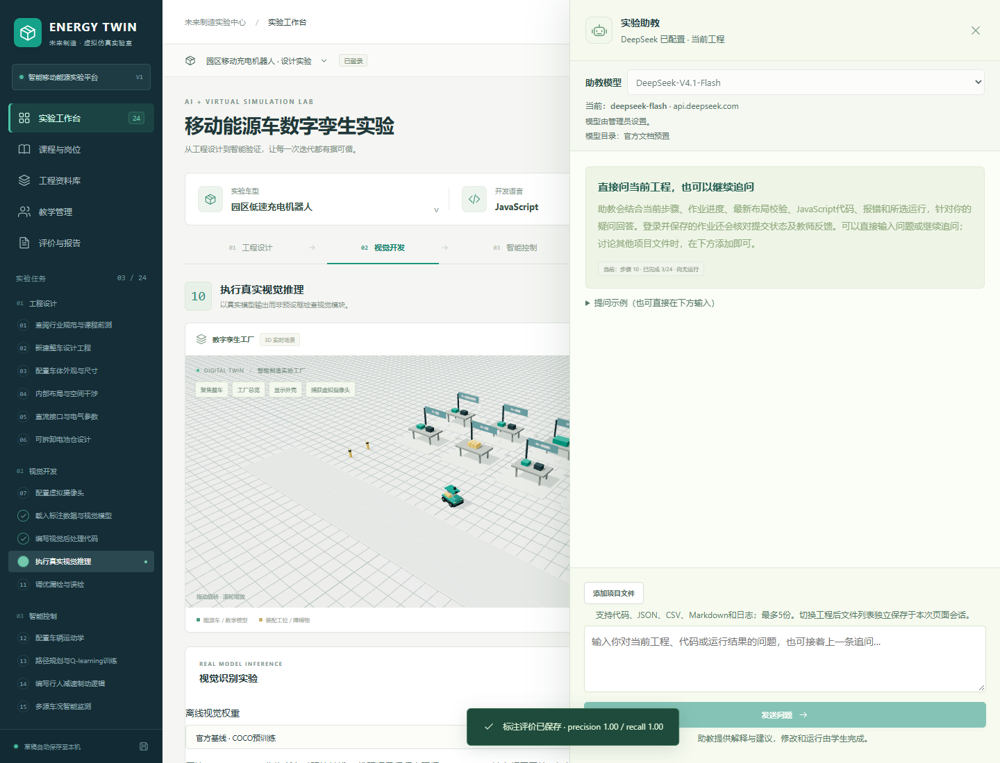
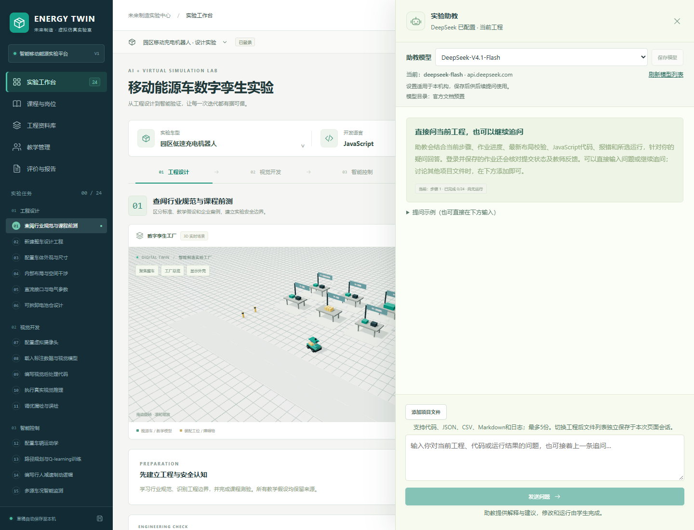

移动能源智造实验室：局域网使用说明
本次部署的主站地址是 `https://192.168.11.76:9443`。同一局域网的电脑可以通过浏览器访问主机，无需各自安装整套平台。主机须保持开机、网络地址稳定，并运行局域网服务。
本说明区分“主机准备”和“其他电脑使用”。主机防火墙规则已核对生效，其他设备连通性仍待现场检查。
一、先认清连接位置
| 使用位置 | 地址或文件 | 用途 |
|---|
| 机房电脑／同网客户端 | https://192.168.11.76:9443 | 工作台、登录、班级、工程与在线助教 |
| 独立代码运行器 | https://192.168.11.76:9444 | 平台自动调用，一般不需要手动打开 |
| 主机原本机入口 | http://127.0.0.1:8765 | 保留原有本机使用方式；其他电脑的127.0.0.1不是本项目主机 |
| 发给客户端的公钥证书 | data/lan/EnergyTwin-LAN-CA.cer | 安装后让浏览器信任本次部署的HTTPS证书 |
 工作台位置参考：左侧切换实验任务，中间查看模型，右侧修改参数；这是平台已有的实际界面截图，地址与账号以本次部署为准。
工作台位置参考：左侧切换实验任务，中间查看模型，右侧修改参数；这是平台已有的实际界面截图，地址与账号以本次部署为准。
主站与运行器使用不同origin。运行器只提供白名单静态文件，没有登录或主站API；它不读取请求中的Cookie或Authorization。同IP不同端口不代表浏览器从不发送Cookie，隔离不能只靠端口。
二、主机管理员先做这两步
1. 启动局域网服务
在主机的项目根目录打开 PowerShell 7，运行：
pwsh -NoProfile -File ./scripts/start-lan.ps1 -Address 192.168.11.76
局域网证书生成依赖PowerShell 7中的.NET能力，不能改用Windows PowerShell 5.1。主机应已完成本机启动准备，具有64位Python 3.12和项目的 .runtime 环境。普通单机启动仍使用“启动实验室.cmd”，不因局域网功能改为必须安装PowerShell 7。
脚本绑定当前局域网IP，开启9443主站与9444运行器，并限制该IP所在子网。主站使用校园模式，在线助教需登录；会话Cookie启用Secure。本机原来的8765服务可继续保留。关闭局域网启动窗口或按Ctrl+C，会停止这组局域网服务，不等于删除工程。
2. 由Windows系统管理员放行两个端口
先右键项目根目录的“局域网防火墙设置.cmd”，选择“以管理员身份运行”。窗口会保留成功或错误结果，避免红字闪退。也可在主机上以系统管理员身份打开PowerShell，进入项目根目录后运行：
pwsh -NoProfile -File ./scripts/allow-lan-firewall.ps1 -Address 192.168.11.76
这与平台的 lab_admin 账号是两种权限。防火墙需要Windows系统管理员，网页登录管理员不能代替系统提权。脚本只放行当前IP的TCP 9443、9444，远程来源限定 LocalSubnet。
2026-10-22由主机使用者以Windows管理员身份执行后显示SUCCESS；随后已实际读取系统规则确认：仅指定IP、TCP 9443/9444、LocalSubnet来源。此前批处理乱码已改为纯ASCII与Windows换行。外部客户端仍需安装证书并实际访问。
三、其他电脑安装公钥证书
- 请主机管理员只提供 `EnergyTwin-LAN-CA.cer` 这一个公钥文件。不要复制整个
data/lan 目录，不要接收或转发服务器私钥。 - 在客户端Windows中双击该文件，打开证书窗口，点击“安装证书”。
- 选择“当前用户”，点击“下一步”。
- 选择“将所有的证书都放入下列存储”，点击“浏览”。
- 选择“受信任的根证书颁发机构”，确认后完成导入；核对证书来源确为本项目主机。
- 完全退出Chrome并重新打开，访问 `https://192.168.11.76:9443`。若浏览器仍提示证书错误，先核对访问IP、证书来源和信任位置，不通过“继续访问”忽略错误。
只需信任本次部署的CA公钥，无需安装Python、Node.js、ONNX或Pyodide。浏览器所需模型、课程与运行资源由主机提供。原站资料链接及在线助教仍需要主机或客户端能访问相应外部服务。
四、登录后按角色使用
| 角色 | 本次账号 | 主要操作 |
|---|
| 管理员 | lab_admin | 管理本机构数据、保存助教模型设置 |
| 教师 | lab_teacher | 建班、发布任务、查看本班提交、批阅反馈 |
| 学生 | 自行注册的个人账号 | 加入班级、完成与保存个人工程、提交作业和提问 |
管理员和教师的口令只保存在主机 data/管理账号.txt，不放入公开手册或运行包；由主机管理员分别交付本人所需口令，不把整份账号文件发给学生。

局域网HTTPS实际教师账号：Python和真实ONNX已运行，模型选项只读，仍可正常输入助教问题。
教师在“教学管理”加载教师数据，建立班级并将班级码发给学生。学生登录、加入班级、从任务建立个人工程。浏览器中修改的内容先是草稿，点击“保存工程”后才进入服务端；完成后再提交作业。提交后保存的快照与后续草稿分开。
打开助教后自动聚焦问题框，Enter发送、Shift+Enter换行；中文输入法选字不发送，等待回复时可以继续写下一条草稿。
管理员打开“实验助教”，在“助教模型”选择模型并点击“保存模型”。教师和学生查看机构选择，不能修改。可选择Flash与Pro，刷新列表以服务端实际结果为准；切换只影响下一次请求，既有对话、工程内容、代码与作业进度保留。

局域网HTTPS实际管理员账号：助教模型可选，设置作用于本机构；这里没有包含账号密码。
五、从原本机入口迁移已有工程
两个入口共用服务端SQLite数据库，但浏览器草稿按origin分别存储。因此从 http://127.0.0.1:8765 换成 https://192.168.11.76:9443 时，原本机草稿、未上传图片和自动操作备份不会自动出现在新地址。
- 在原本机入口登录自己的账号，将需要继续的工程“保存工程”到服务端；也可导出完整工程JSON留底。
- 在局域网入口登录同一账号，从工程列表打开已保存的工程；若用JSON迁移，在工程菜单选择“导入工程JSON”。
- 核对工程名、代码、参数和运行ID，再继续实验。原始导入图片需重新选择，不能用截图或CSV代替完整工程。
不要为了迁移草稿复制正在运行的数据库文件。备份和恢复仍使用使用说明第9节的SQLite备份命令。
六、打不开时按现象检查
| 现象 | 检查顺序 |
|---|
| 超时或无法连接 | 主机是否开机、局域网服务是否运行；是否使用当前IP；双方是否在同一子网；主机防火墙是否实际允许9443、9444 |
| 证书不受信任／地址不匹配 | 是否使用HTTPS与正确IP；是否安装本次CA公钥到当前用户的受信任根证书；是否完全退出并重启Chrome |
| 页面能开、代码运行器失败 | 9444是否放行；是否仍有证书问题；查看平台运行器错误，不用伪造结果继续 |
| 助教要求登录 | 局域网是校园模式，先登录自己的账号，再重新发送原问题 |
| 助教连接失败 | 查看本条回答的原因，核对主机联网、服务端密钥与实际模型服务；规则回退不等于在线模型回答 |
| 主机换网后原地址失效 | 在主机确认新IP，用新地址重启局域网脚本，重新核对防火墙并分发新的CA公钥，客户端更新访问地址 |
| 局域网入口没有原草稿 | 回原入口保存服务端工程，或导出完整JSON后在新入口导入；先保留原数据，不清理浏览器 |
七、验收和保存
当前已通过主机使用局域网IP的HTTPS自访验证：真实管理员/教师登录、Secure会话、独立HTTPS运行器执行Python、真实ONNX、角色模型设置权限及私有文件路径不可访问。证据见 evidence-lan/lan-host-qa.json；浏览器未忽略证书错误。当前文件说明的是已配置的局域网方案与操作方法。真实其他设备连接，以及目标机房并发与性能仍需现场核验，不能用主机自访替代。请在一台同子网电脑上完成证书安装、登录、打开工程、实际运行Python并向助教提问，保存当时结果再确认交付。
主机的服务器私钥、DeepSeek密钥、数据库、备份和账号口令文件不得作为静态文件或共享目录发布。客户端只取得CA公钥及各自账号。正式学校域名、独立主机名与反向代理的部署配置见[校园部署](校园部署.md)。